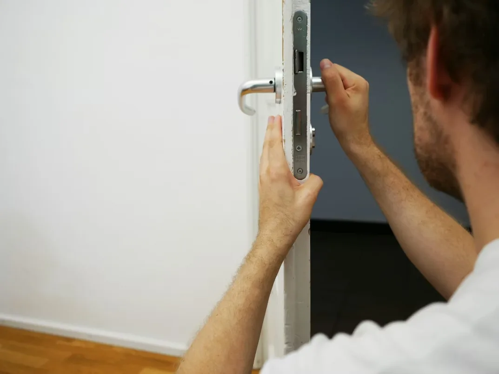

¿Perdiste las llaves? Abre tu puerta o auto AHORA.
Expertos en seguridad residencial y automotriz. Servicio de urgencia 24/7 en todas las comunas. ¡Llámanos al +56 9 3592 5112!
¿Por qué elegir a Cerrajero Santiago 24?
15-20 Minutos
Llegada rápida garantizada en toda Santiago. Servicio urgente sin demoras.
100% Seguro
Técnico certificado sin antecedentes. Aperturas sin daños garantizadas.
Precios Fijos
Presupuesto sin costo previo. No hay cobros ocultos ni sorpresas.
5.0/5 Estrellas
16 reseñas verificadas en Google de clientes reales.
Atención 24/7
Disponibles siempre, días festivos y madrugadas incluidas.
Garantía 6 Meses
Garantía en todos nuestros trabajos. Soporte post-venta sin costo.

Terreno
CERRAJERÍA DE CONFIANZA Y CERTIFICADA
Conoce a Rodolfo Delgado, tu cerrajero de confianza.
Hola, soy Rodolfo Delgado, técnico cerrajero certificado. Entiendo tu urgencia y sé lo estresante que es quedarse fuera. Mi trabajo es devolverte la seguridad y tranquilidad rápidamente.
- Técnico certificado y sin antecedentes.
- Aperturas garantizadas: Sin daños.
- Precios transparentes y fijos.
Nuestros Servicios de Urgencia 24/7
Soluciones profesionales de cerrajería para emergencias y mantenciones en Santiago. Presupuesto sin costo, aprobación previa garantizada.
Nuestro proceso es transparente: Evaluamos el trabajo, presentamos presupuesto detallado (desde $35.000 CLP), y solo procedemos después de tu aprobación.
Apertura de Puertas y Casas
Servicio urgente 24/7 para apertura de puertas de casas, departamentos, oficinas y rejas. Utilizamos técnicas de ganzuado profesional sin dañar la cerradura ni la puerta. Especialistas en cerraduras de seguridad, candados de alta resistencia y chapas antiguas. Tiempo de respuesta: 15-20 minutos en toda Santiago.
Cerrajería Automotriz
Expertos en apertura de vehículos sin dañar la pintura. Realizamos copias de llaves inteligentes con chip (inmobilizer), reprogramación de sistemas de control remoto y soluciones para autos con llaves perdidas o rotas. Compatible con todas las marcas: Toyota, Honda, Hyundai, Chevrolet, Kia y más. Precios competitivos con garantía.
Cambio de Chapas y Cerraduras
Instalación y cambio de cerraduras de alta seguridad, chapas de seguridad, cerraduras cilíndricas y cajas fuertes. Trabajamos con marcas premium como Yale, Master Lock y cerraduras de seguridad certificadas. Servicio de mantención y cambio de cerraduras para propietarios, inmobiliarias y empresas. Contamos con opción de chapas electrónicas.
Cobertura Rápida en Santiago
Llegamos a todas las comunas de la Región Metropolitana en 15-20 minutos. Toca tu comuna para contactar directo.
Cerrajería en tu Comuna
Especialistas en cerrajería de emergencia para todas las comunas de Santiago
Cerrajero en Providencia
Expertos en cerrajería en Providencia. Aperturas de emergencia, llaves inteligentes y cambio de cerraduras en todos los sectores. Ver página →
Cerrajero en Las Condes
Especialistas en aperturas sin daño y chapas de alta seguridad en casas y departamentos de Las Condes. Ver página →
Cerrajero en Vitacura
Cerrajería premium en Vitacura. Especialistas en Mul-T-Lock, ABUS y sistemas de acceso de condominios. Ver página →
Cerrajero en Ñuñoa
Servicio urgente en Ñuñoa. Apertura de puertas, autos con tecnología Lishi e instalación de chapas de seguridad. Ver página →
Cerrajero en La Florida
Cobertura completa en La Florida con servicio 24/7 y llegada en 15-20 minutos a cualquier punto. Ver página →
Cerrajero en Maipú
Cerrajero en Maipú. Sin recargo nocturno, cobertura en toda la extensión de la comuna poniente. Ver página →
Cerrajero en San Miguel
Servicio urgente en San Miguel. Gran Avenida, Av. Departamental y todos los sectores de la comuna sur. Ver página →
Cerrajero en Lo Barnechea
Cerrajería en Lo Barnechea, La Dehesa y El Arrayán. Especialistas en chapas premium para condominios. Ver página →
Cerrajero en Pudahuel
Servicio 24 horas en Pudahuel Norte, Pudahuel Sur y Av. Américo Vespucio. Llegada 25-35 min. Ver página →
Cerrajero en Cerrillos
Cerrajería en Cerrillos y sector de Av. Pedro Aguirre Cerda. Urgencias y cambio de chapas. Ver página →
Cerrajero en El Bosque
Atendemos El Bosque Norte y Sur. Técnico disponible 24 horas, sin recargo nocturno. Ver página →
Cerrajero en San Ramón
Cerrajería en San Ramón y Av. Lo Ovalle. Apertura de puertas y cambio de chapas urgente. Ver página →
Cerrajero en Quilicura
Atendemos Quilicura, El Cortijo y Av. Américo Vespucio Norte. Servicio 24 horas. Ver página →
Cerrajero en Conchalí
Cerrajería en Conchalí y Av. Independencia. Llegada en 20–30 minutos, sin recargo nocturno. Ver página →
Cerrajero en Renca
Atendemos Renca, El Rosal y Bajos de Mena. Técnico disponible 24/7. Ver página →
Cerrajero en La Pintana
Servicio de cerrajería en La Pintana y Av. Departamental. Urgencias y cambio de chapas. Ver página →
Somos cerrajero disponible en todas las comunas de Santiago: Providencia, Las Condes, Vitacura, Lo Barnechea, Ñuñoa, La Reina, Macul, Peñalolén, La Florida, San Miguel, San Joaquín, La Cisterna, Estación Central, Quinta Normal, Maipú, Independencia, Recoleta, Conchalí, Huechuraba, Quilicura, Renca, La Pintana y Santiago Centro.
Lo que dicen nuestros clientes
Preguntas Frecuentes sobre Cerrajería
Resuelve tus dudas sobre nuestros servicios de cerrajería en Santiago
Nuestro tiempo de respuesta es de 15 a 20 minutos en todas las comunas de Santiago. En horarios de emergencia (madrugada o festivos) puede variar entre 20-30 minutos dependiendo del tráfico. Contamos con GPS en tiempo real para optimizar las rutas.
Sí, emitimos boleta o factura electrónica por todos nuestros servicios. Contamos con RUT certificado y todos nuestros servicios cumplen con los requisitos tributarios chilenos. Puedes solicitar factura para deducción de gastos empresariales.
Sí, utilizamos herramientas profesionales de ganzuado (Lishi) certificadas que no dañan la chapa ni la pintura del vehículo. Nuestras técnicas son las mismas utilizadas por concesionarios oficiales. Ofrecemos garantía de que no habrá daños en tu auto.
Nuestros servicios comienzan desde $35.000 CLP. El costo final depende de la complejidad del trabajo, el tipo de cerradura, materiales a utilizar y tiempo de atención. Realizamos un diagnóstico gratuito y entregamos un presupuesto detallado antes de iniciar cualquier trabajo. No procedemos hasta que apruebes el presupuesto. Garantizamos transparencia: no hay cargos sorpresa ni costos ocultos. El precio que ves en el presupuesto es el que pagarás.
Sí, somos un servicio 24/7. Atendemos madrugadas, fines de semana y festivos. Disponibles todos los días del año incluyendo 25 de diciembre, 1 de enero y otras festividades nacionales. Horario de atención: 00:00 a 23:59.
Aceptamos: efectivo, transferencia bancaria, Khipu, aplicaciones de pago (Servipag), y tarjeta de débito. Para compras en línea aceptamos todas las tarjetas de crédito. Ofrecemos facilidades de pago para servicios de mantención y cambio de múltiples chapas.
Sí, por seguridad requerimos comprobación de identidad (cédula de identidad o documento) y preferiblemente comprobante de arriendo o propiedad del inmueble. En casos de emergencia donde no tengas acceso a documentos, evaluamos la situación de forma individual.
Sí, ofrecemos garantía de 6 meses en trabajos de cambio de chapas y instalación de cerraduras. Todas nuestras aperturas están garantizadas sin daños. Si surge algún problema, atendemos llamadas de garantía sin costo adicional.
Sí, atendemos empresas, inmobiliarias, edificios y negocios. Ofrecemos presupuestos especiales para servicios recurrentes, mantención de cerraduras y cambios múltiples. Contamos con experiencia en gestión de llaves maestras y sistemas de seguridad integrados.
Sí, tenemos experiencia con cerraduras antiguas, chapas tradicionales y sistemas de seguridad del pasado. Podemos hacer duplicados de llaves antiguas o actualizar cerraduras modernas si lo deseas. Somos especialistas en cerrajería clásica y contemporánea.
Sí, cubrimos todas las comunas de Santiago y la Región Metropolitana incluyendo: Santiago Centro, Providencia, Las Condes, Vitacura, Lo Barnechea, Ñuñoa, La Reina, Macul, Peñalolén, La Florida, San Miguel, San Joaquín, La Cisterna, Estación Central, Quinta Normal, Maipú, Independencia, Recoleta, Conchalí y Huechuraba.
Sí, preferimos comunicación por WhatsApp (+56 9 3592 5112) para responder rápidamente. Puedes enviar fotos de la cerradura, describir el problema y recibirás presupuesto inmediato. También atendemos llamadas telefónicas directas para emergencias.
Somos cerrajero certificado con 10+ años en el oficio. Contamos con referencias verificadas en Google, perfiles en redes sociales y testimonio de cientos de clientes satisfechos. Nuestro técnico es identificable y utiliza uniforme profesional. Ofrecemos garantía en todos los trabajos.
Para servicios programados de mantención, limpieza de cerraduras o cambio de múltiples chapas, puedes contactarnos vía WhatsApp o completar el formulario en nuestra web. Ofrecemos presupuestos personalizados y flexibilidad de horarios para servicios no urgentes.
Sí, nuestro servicio es completamente a domicilio. Nos presentamos en tu casa, departamento u oficina con todo el equipo necesario. No hay costo de traslado, solo pagas el servicio de cerrajería. Disponibles en todas las comunas de Santiago con cobertura 24/7.
Métodos de Pago
Aceptamos múltiples formas de pago para tu comodidad
Efectivo
Pago en efectivo al momento del servicio. Disponible en todas nuestras atenciones.
Transferencia Bancaria
Transferencia directa a cuenta bancaria. Te enviamos datos por WhatsApp.
Tarjeta de Débito
Tarjetas de débito de cualquier banco chileno. Procesamos en el instante.
Apps de Pago
Khipu, Servipag y otras aplicaciones de pago digital. Rápido y seguro.
Precios de Cerrajería en Santiago
Tarifas transparentes y fijas. Presupuesto sin costo antes de iniciar cualquier trabajo.
Apertura de Puerta
Casas, departamentos, oficinas y rejas. Sin daños garantizados.
Apertura de Auto
Todo tipo de vehículos. Técnica Lishi sin rayones ni daños a la pintura.
Cambio de Chapa
Cerraduras Yale, Master Lock y marcas premium. Garantía 6 meses incluida.
Copia de Llave
Llaves de seguridad, chips transponder e inmobilizer para autos. Copias simples: consultar precio.
El precio final se informa antes de iniciar el trabajo. Sin cobros ocultos ni cargos de traslado.
Contáctanos
Completa el formulario y te respondemos por WhatsApp en segundos. Para urgencias, llama directamente.